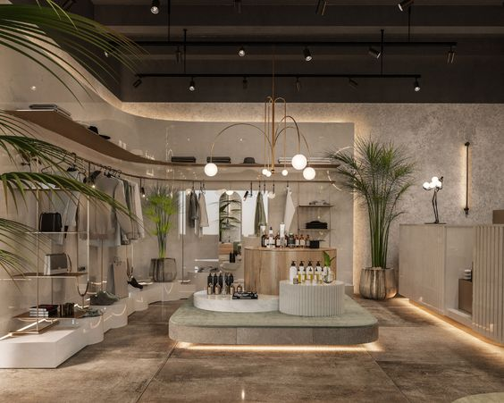

Prior to COVID-19, India had the 3rd largest commercial air travel market with over 170 million domestic flight passengers annually. This project utilizes data-driven techniques in Tableau to analyze a dataset of 300,000 domestic flights in India over a 50-day period. The project seeks to answer 3 key questions and gain deeper insights into the airline ecosystem in India:
•Which airlines dominated the Indian airline industry through total tickets and revenue?
•What is the distribution of flight prices for the top performing airlines based on arrival and departure time?
•Is there a relationship between flight duration or the number of days before flight that affects the flight price?
With New York having the 3rd most AirBNB listings in 2021 with over 94,000 listings, this project delves into the factors that influence New York City's AirBNB prices, using advanced modeling techniques such as cross-validation, dimensionality reduction, and K-Modes/K-Prototype clustering. With a dataset containing 50,000 data points and 16 variables, we used Python Notebook to clean and visualize the data, and identified key drivers of price fluctuations in one of the world's busiest markets for short-term rentals.
Motivated by the staggering statistic that 10 million people suffer long-term damage from strokes annually, this project aimed to predict the likelihood of stroke in individuals based on 11 relevant variables. Using advanced analytical techniques such as Logistic Regression, KMeans Clustering, and Decision Tree analysis, our team was able to achieve an 85% accuracy rate in comparing coefficients, and identify distinct clusters to predict the probability of stroke in individuals.
For my Data Analytics Capstone at Chapman University, my team and I tackled a real-world business challenge by analyzing multiple large datasets to identify opportunities for revenue growth. Leveraging regression modeling, customer segmentation, and Excel data visualizations, we developed a comprehensive analysis and delivered a compelling, data-driven narrative that led to actionable business recommendations. Our efforts resulted in the highest grade among 50 student teams, showcasing our ability to transform complex data into valuable insights for business success.
After taking my first *enjoyable* sip of coffee in 2022, I was inspired to create a project focused on a coffee shop business and identifying opportunities for revenue growth. By analyzing customer demographics and developing data visualizations using Tableau, I generated data-driven insights and made strategic business recommendations.
Based on a Springboard Data Analytics program assignment, this project was created to provide insight on market outages and market reliability through energy stability and energy loss.
By analyzing montly outage trends, outage durations, and megawatts lost per electricity provider, recommendations were able to made to generate profitable business decsions.

This project determines the top 10 markets for a retail startup to enter based on consumer unit characteristics, average weekly sales by region,
and sales differences on holiday vs. non-holiday weeks per region. Data visualizations were created through Excel and business recommendations were communciated effectively through a presentation.